¿QUIEN PORONGA SOY?
Me llamo Eduardo Alvarado Radilla, aunque casi todos me dicen Lalo… y algunos hasta Kamionzitto.
Nací el 13 de julio del 2006 en Guerrero. A veces me pega la nostalgia por esa época de adolescencia que siento que no viví como tal.
Soy fan de las quesadillas, me encanta escuchar de todo tipo de música, aunque tengo un crush especial con los 2000s.
También me la paso jugando Just Dance y Plants vs Zombies, dos juegos que nunca me fallan. Y bueno, entre gustos y risas, también me gustan los hombres, jajajaja.
Mis hobbies son un poco raros: me gusta bailar y también intento programar (aunque con cero conocimiento, pero ahí le hago la lucha).
Prefiero salir a lugares donde no haya mucha gente, porque el gentío me aburre rápido.
Tengo algunos gestos y frases que me identifican: morderme el dedo, ser medio “mierda” a veces, y decir ayiora como sello personal.
Sueño con dedicarme a algo relacionado con la animación, porque me fascina la creatividad.
Si tuviera que describirme en tres palabras sería: pendejo, gordo y divertido.
Un recuerdo que siempre me saca risa fue cuando conocí a Karina Torres de Las Perdidas. Algo random, pero inolvidable.
En pocas palabras, así soy yo: Lalo, un kamionzitto nostálgico, musical, gamer y con ganas de darle vida a la animación.
AMIGOS Y YO
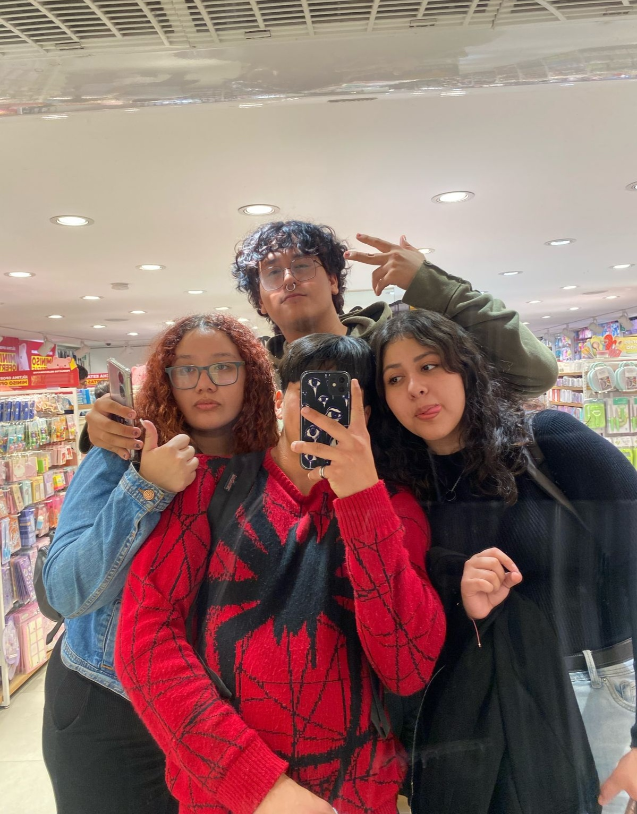 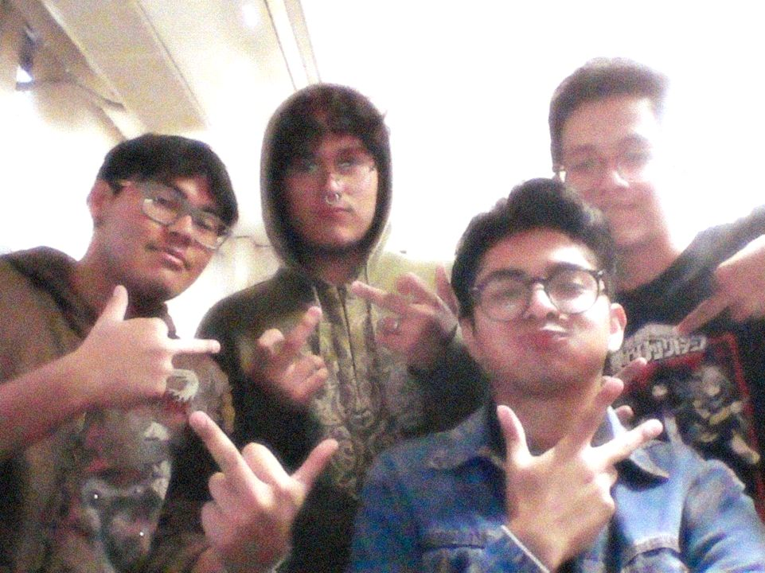MUSICA FAV
Segun Apple Music son estas:
- 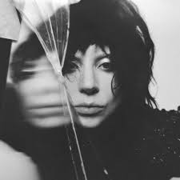 Abracadabra - Lady gaga
- 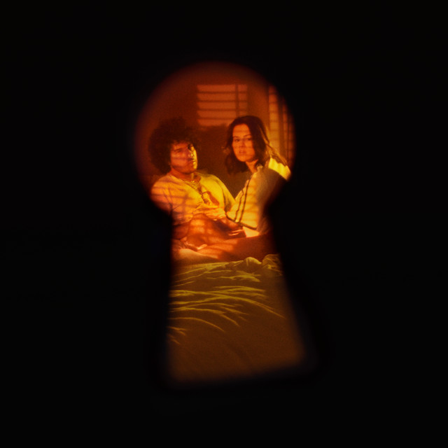 Ojos Tristes - Selena Gomez & The Marias
- 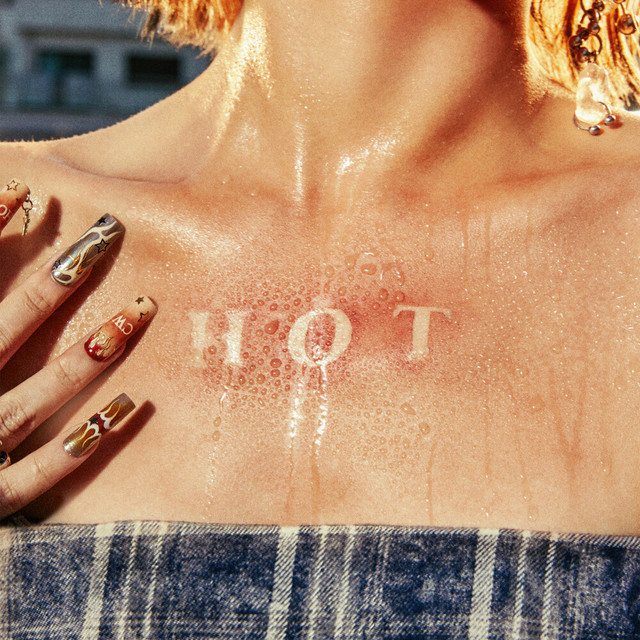 Hot - LE SSERAFIM
- 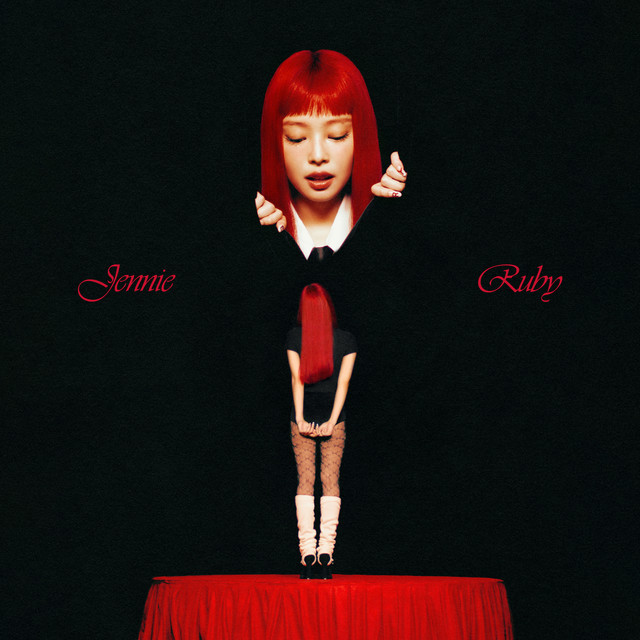 Extral - JENNIE
- 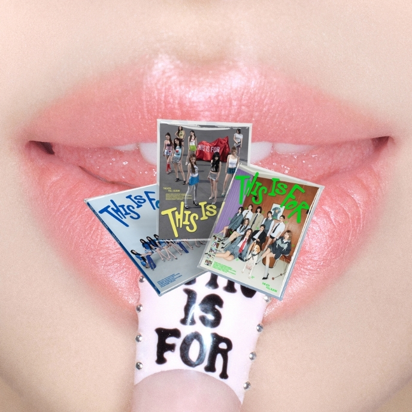 Mars - TWICE
 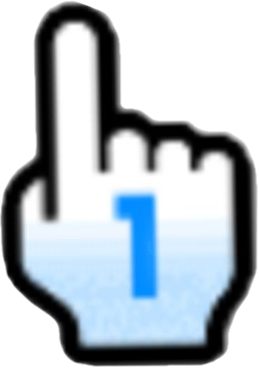
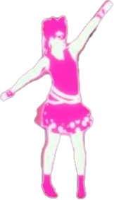
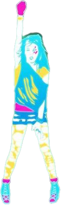
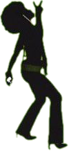
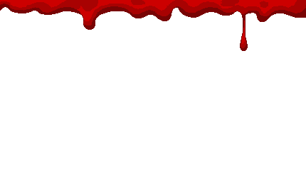
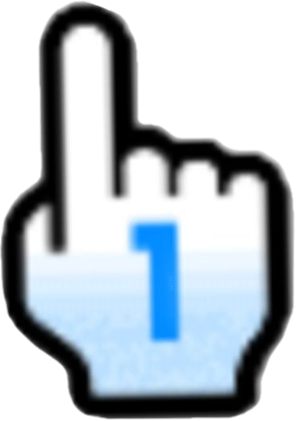
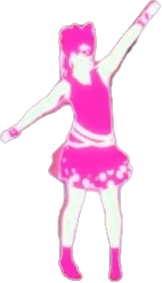
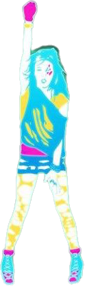
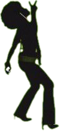
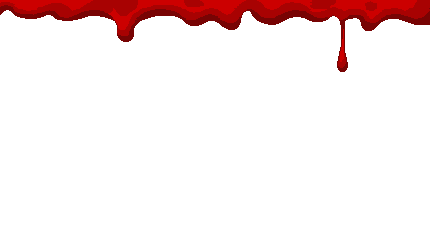
 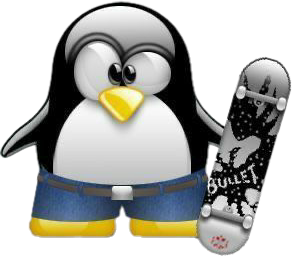
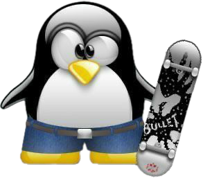